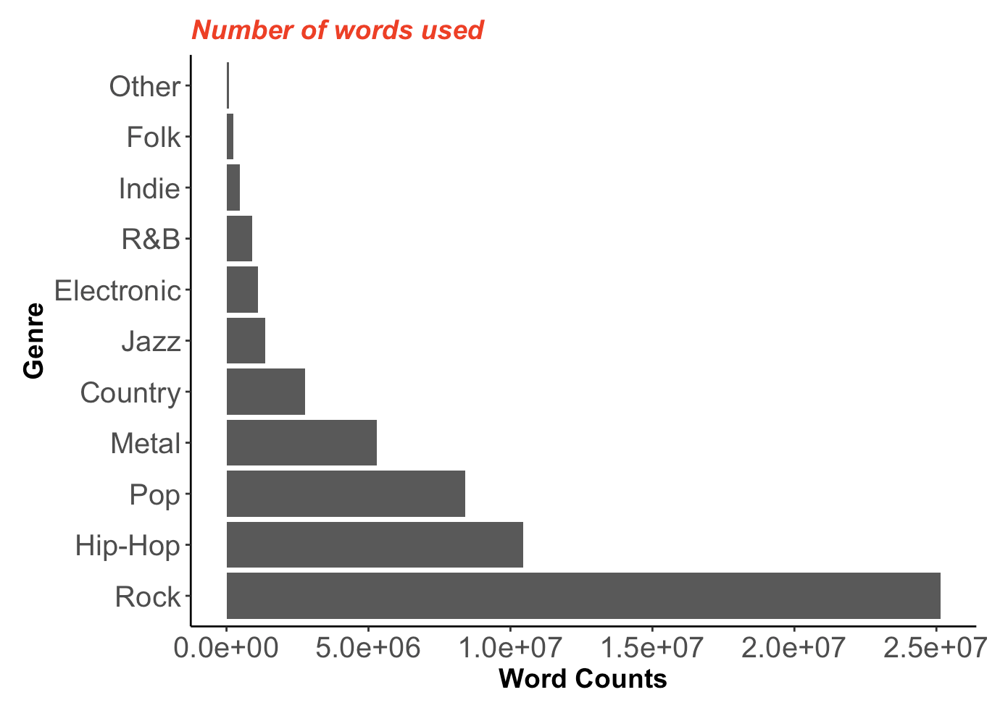
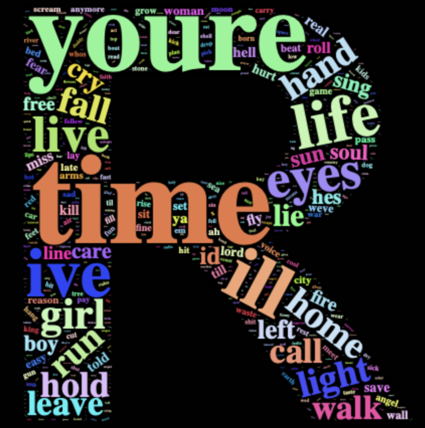
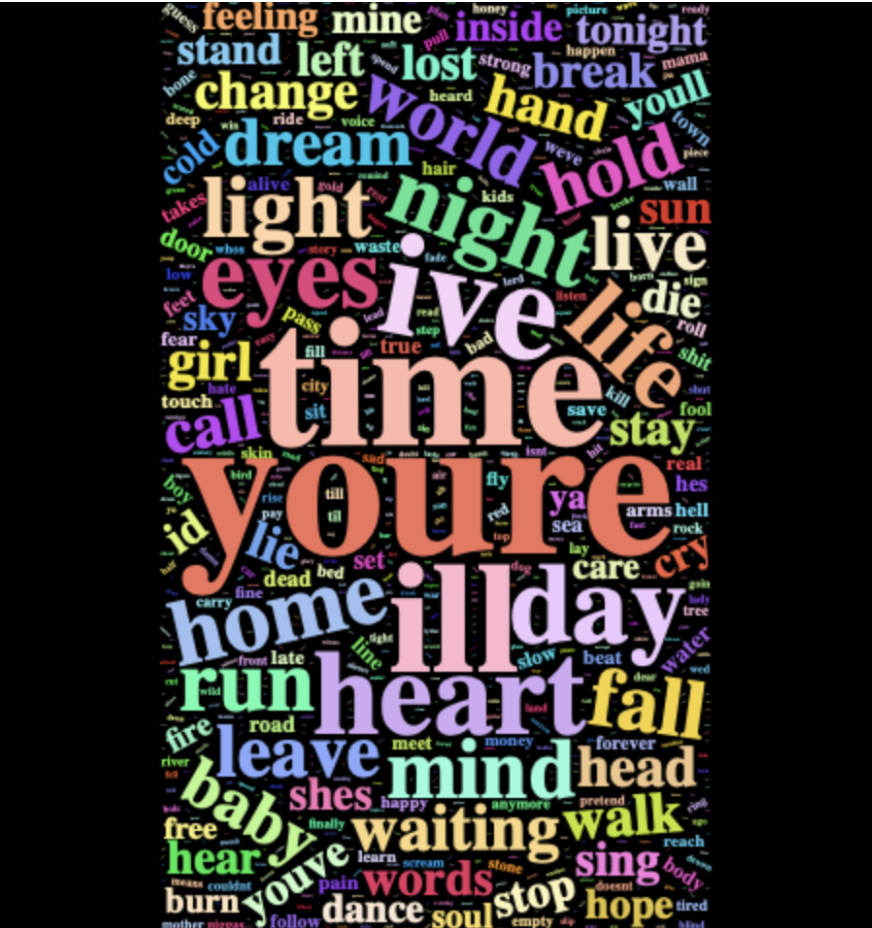
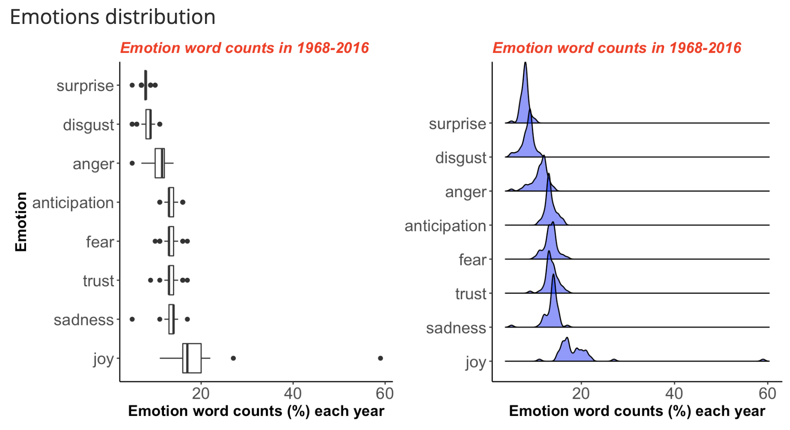
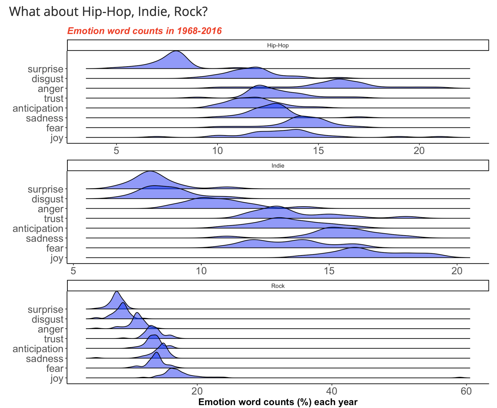

#1 Text Mining
Song by genres
Library requirements
library(data.table)
library(knitr)
library(ggplot2)
library(dplyr)
library(wordcloud2)
library(tidyverse)
library(tidytext)
library(tm)
library(RColorBrewer)
library(DT)
library(gplots)
library(ggridges)
library(gridExtra)People have been living in a world full of various sentiments such as excitements, sadness, happiness, etc. Songs have been used as representatives of emotions towards love, politics and even more. In this project, it will deliver some interesting findings about songs.
First, let’s take a look at the number of characters of stemmed words by genre. As you can see, the number of characters used in Rock is the biggest, even 2 times more than that of Hip-Hop, the next frequent genre. I looked at the dt_lyrics dataset more closely and found out that there are significant imbalances in observations, i.e. high number of observations in 2006 and 2007 compared to the rest years, so that it concludes that it makes sense to compare them in proportions rather than the counts. For the purpose of simplicity, two genres, Rock and Indie, are chosen to see if there are some differences.
 First, let’s take a look at the number of characters of stemmed words by genre. As you can see, the number of characters used in Rock is the biggest, even 2 times more than that of Hip-Hop, the next frequent genre. I looked at the dt_lyrics dataset more closely and found out that there are significant imbalances in observations, i.e. high number of observations in 2006 and 2007 compared to the rest years, so that it concludes that it makes sense to compare them in proportions rather than the counts. For the purpose of simplicity, two genres, Rock and Indie, are chosen to see if there are some differences.
These are wordclouds that show which words are frequently used, presented in different sizes. Two plots show that two genres have top frequently used words in common. For example, they all talk about youre, time, life a lot. Major differences in frequencies are hard to distinguish and common words are frequently used regardless of genres.
We sing because we want to express our feelings through songs so the sentiment analysis is the most important part in this project. Let’s look at some of characteristics of stemmed words by the sentiment analysis referenced by the NRC lexicon. In each year, the frequencies of eight basic emotions were collected in percent and calculated to show the emotion distributions.
All eight emotions are expressed at word counts rates. At the first plot, joy, sadness, trust have the highest frequencies in use than others. In addition, the right plot shows the density distribution of emotions, which tells us that emotions such as surprise, disgust, fear are approximately normally distributed but those such as joy, sadness, anger are highly skewed.
This graph shows how different the emotions would be distributed depending on different genres. So ridgeline plots are made to represent the distribution of emotions used in Hip-Hop, Indie, and Rock. Obviously, the emotions used in each of three genres are distributed very differently.
Back